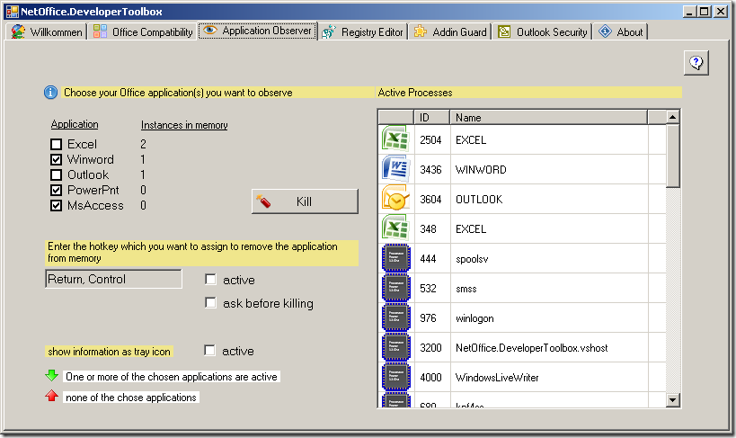

Application Observer
What does the Application Observer do for you?
If you are automating Office applications, it can easily happen that the COM-Proxies assigned to you are not freed correctly upon error, e. g. if you abort the debugging process too early. You Office Application is then not properly shut down and stays in memory. During longer development-sessions you can accumulate a bit number of zombie-instances, which may (depending on the Office application) causes problems. The Application Observer helps you in keeping an eye on one or more Office applications and -if you choose to- kill them via a hotkey.

Functionality and Settings
Choose the Office application you want to monitor (and possibly quit) in the upper left area. You can set global hotkey to quit the chosen Office applications in the lower area. The hotkey is limited to two keys. Futhermore, you can activate a tray icon which shows you if the selected Office applications are currently in memory. In the right area you can find a list of all currently active processes for your information.